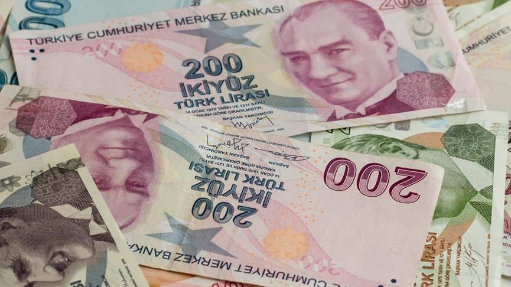
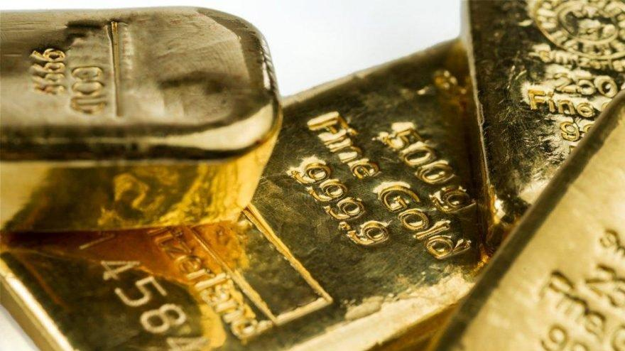

28.12.2021
Cumhurbaşkanı Recep Tayyip Erdoğan, cuma günü kripto para düzenlemesinin hazır olduğunu ve kısa süre içinde Meclis'e gönderileceğini açıklamıştı. Bu açıklama sonrasında AKP'den bir adım daha geldi. Grup Başkanvekili Mustafa Elitaş, Twitter'da kripto sektörünün önde gelen isimlerinin yer aldığı bir canlı yayına katıldı.
Elitaş, sektörün görüş ve önerilerini almak için kripto para temsilcilerini Meclis'e davet ettiklerini açıkladı. Görüşmede taslak hakkında görüş ve öneriler alınacak.

28.12.2021
TCMB tarafından yapılan açıklamada, Merkez Bankası’nın 21 Aralık tarihinde yaptığı basın duyurusunda, bankacılık sistemindeki toplam mevduat/katılım fonu içinde Türk lirasının payının artırılarak finansal istikrarın desteklenmesi amacıyla; 20 Aralık 2021 tarihinde ABD doları, Euro ve İngiliz Sterlini cinsinden döviz tevdiat hesabı veya döviz cinsinden katılım fonu bulunan yurt içinde yerleşik gerçek kişilerin, söz konusu hesaplarını vadeli Türk lirası mevduat/katılma hesabına dönüştürmeleri halinde, TCMB'nin sağladığı destekten yararlanabilmesine ve vadeli Türk lirası mevduat ve katılma hesaplarına dönüşen tutarların zorunlu karşılık tesisinden muaf tutulmasına karar verildiğini kaydetti.

28.12.2021
2021’e 450 TL seviyelerinde başlayan gram altın, yılın ikinci çeyreğinde 530 TL seviyelerine kadar yükseldi. Sonrasında Eylül ayına kadar 500 TL’nin altında hareket eden gram altın, TCMB’nin faiz artırım döngüsüne girmesi ile birlikte Dolar/TL kurundaki sert yükselişlerin etkisiyle hızla arttı. Kasım’da 600 TL üzerine tırmanan gram altın, geçtiğimiz Pazartesi dolar/TL’nin tarihi zirvesini görmesi ile birlikte rekor kırarak 1000 TL’nin üzerine tırmandı. Kur korumalı mevduat sisteminin açıklanmasıyla birlikte döviz kurlarındaki sert düşüş sonrası altın fiyatları da 700 TL’nin altına çekildi.

28.12.2021
Dolar bugün 28 Aralık 2021 Salı günü 11.87 TL'den işlem görüyor. Türk lirası, yeni haftanın ilk işlem gününde üst üste beş günlük yükselişinin ardından değer kaybederken, dolar kuru paritesinin ise 50 günlük hareketli ortalamasına doğru yükseldiği takip edildi.
Gelişen ülke para birimleri arasında karışık bir seyir izlenirken, TL'nin dolar karşısında %7,66 oranında değer kaybettiği ve en zayıf performans gösteren gelişen ülke para birimi konumunda yer aldığı gözlemlendi. Bununla birlikte 10,80'li seviyelerden yükselişe gelen USDTRY paritesi 11,60 üzerine yükselerek 50 günlük hareketli ortalama çizgisine ulaştı.